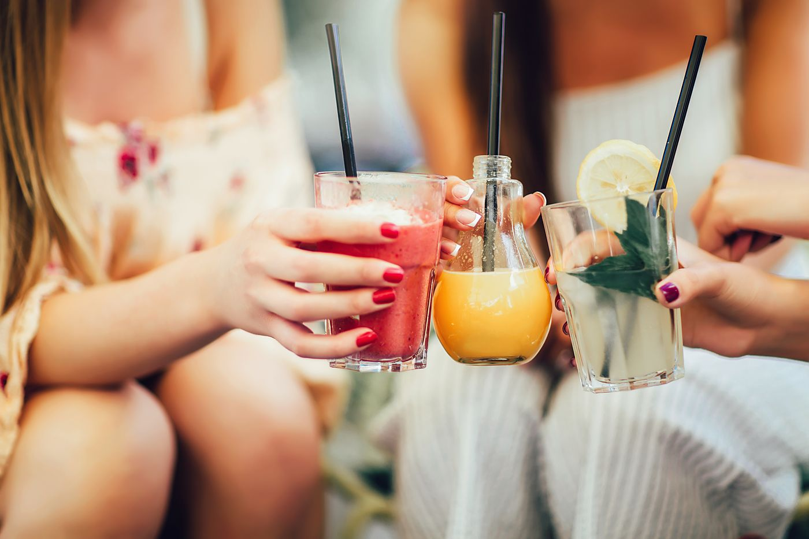
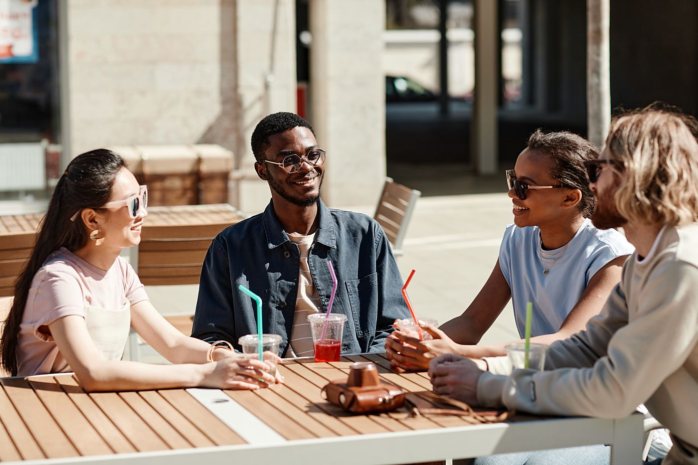
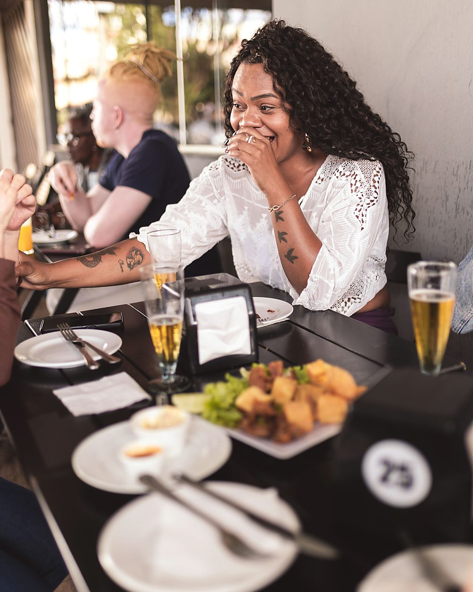
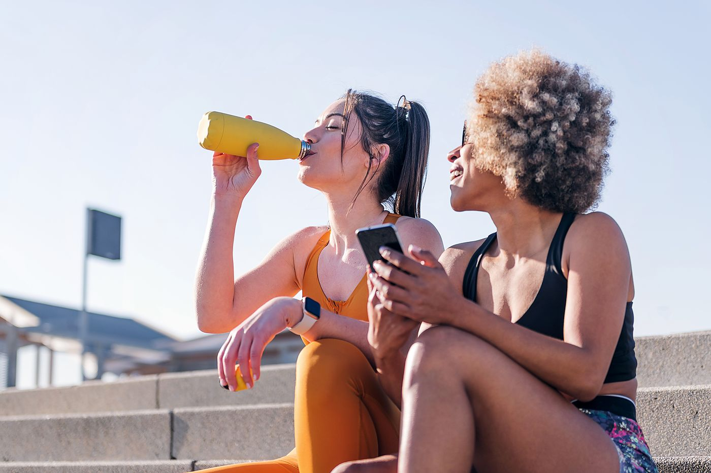
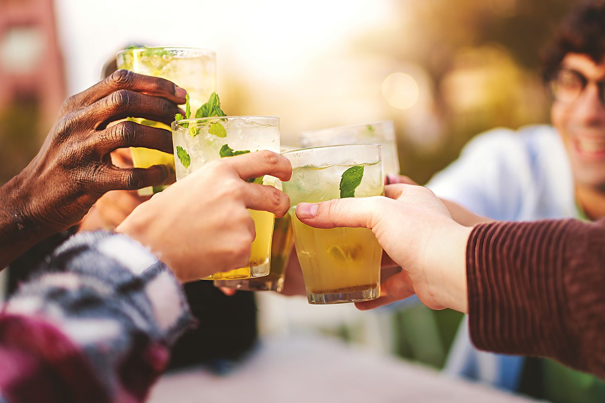
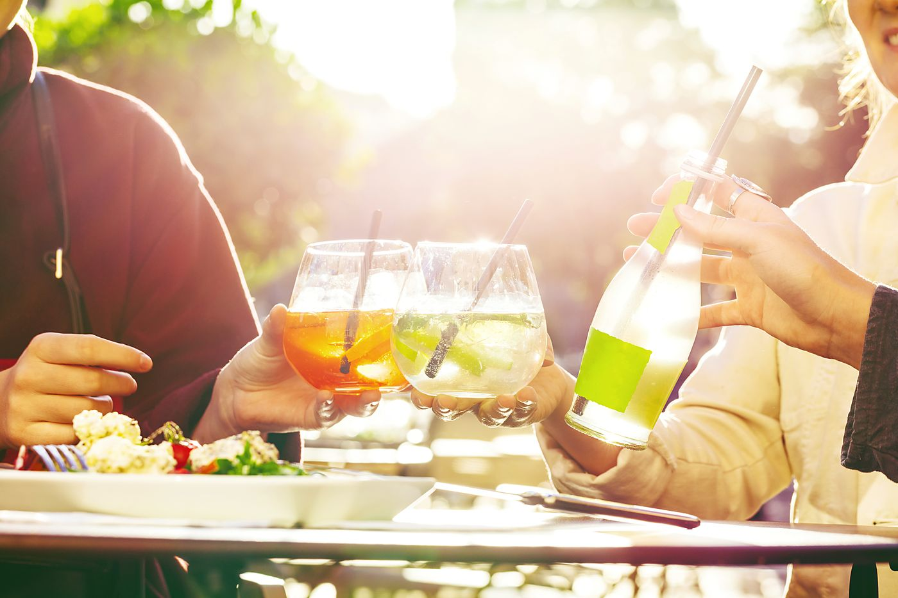

People who drink it.
Messages we have been sent, things people said at the Saturday door, and photographs they let us use. Quoted as written, first names only, and where they were when they drank it.

“My mother, who has opinions about drinks, said it tastes like the lime juice from the old Toa Payoh stall. That is the highest praise she has.”

“Not sweet. Finally. Roselle with mutton kurma on Sunday, sorted.”

“we bring a six pack to every east coast bbq now and someone always asks what it is. it’s the watermelon one. get the watermelon one”


“The pineapple one saved a very hot afternoon at the climbing gym. Salty in the right way — like a sports drink, except you would actually drink it.”

“Ordered on WhatsApp on Thursday, at the door on Saturday, Arif remembered my name. Small company things.”

“I bought one because of the name and six because of the grapefruit.”

Tell us what you thought.
Good, bad, or “the roselle is too sour” (it is meant to be). Message the WhatsApp, or say it at the door — Saturdays are for exactly this. If you send a photo and are happy for it to go here, say so, and we will ask before we use it.